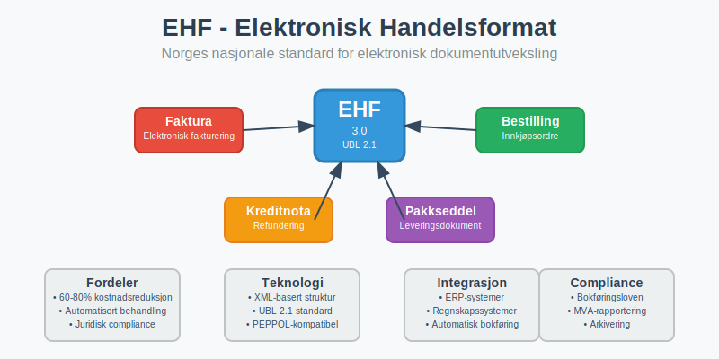
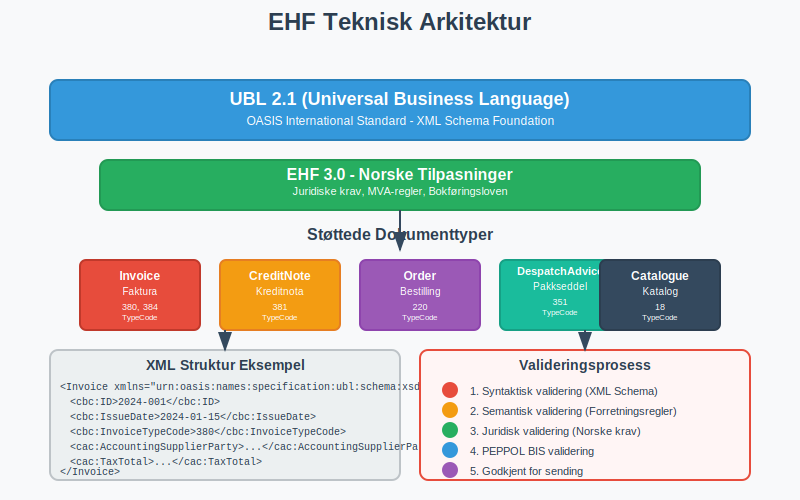
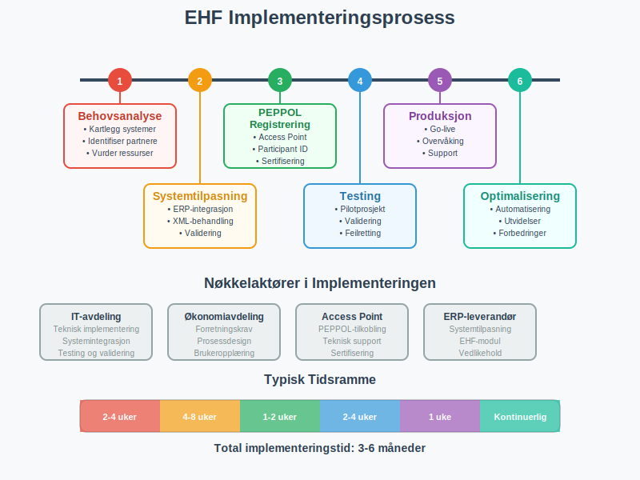
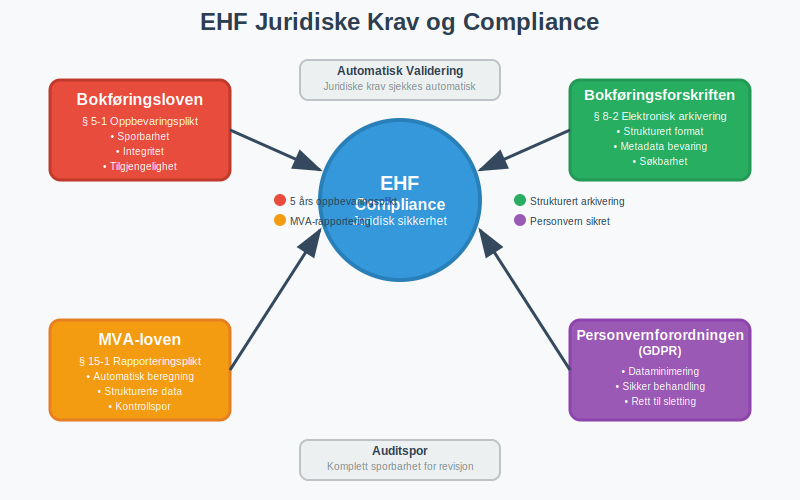
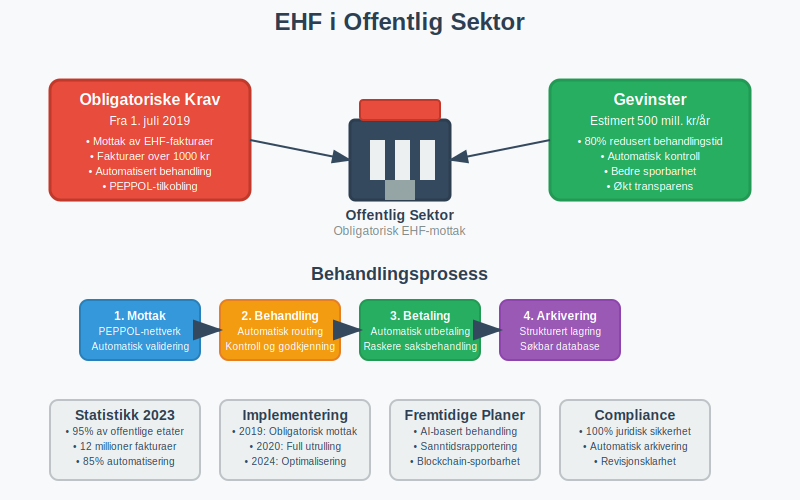

EHF (Elektronisk Handelsformat) er Norges nasjonale standard for elektronisk utveksling av handelsdokumenter, spesielt fakturaer og andre forretningsdokumenter. Denne standarden, utviklet av Difi (nå Digitaliseringsdirektoratet), bygger på internasjonale UBL-standarder (Universal Business Language) og er tilpasset norske juridiske krav og forretningspraksis for bokføring og regnskapsføring.

EHF representerer en fundamental digitalisering av handelsprosesser i Norge og er en sentral komponent i eFaktura-økosystemet. Standarden sikrer strukturert, maskinlesbar utveksling av forretningsinformasjon som kan integreres direkte i ERP-systemer og regnskapssystemer.
Seksjon 1: Teknisk Arkitektur og Standarder
EHF baserer seg på XML-teknologi og følger internasjonale standarder for å sikre interoperabilitet og fremtidssikkerhet. Standarden er bygget på UBL 2.1-spesifikasjonen med norske tilpasninger.

1.1 Støttede Dokumenttyper
EHF-standarden dekker flere typer forretningsdokumenter:
| Dokumenttype | EHF-versjon | Beskrivelse | Bruksområde |
|---|---|---|---|
| Faktura | EHF 3.0 | Elektronisk faktura | B2B og B2G fakturabehandling |
| Kreditnota | EHF 3.0 | Kreditering og refundering | Korrigering av fakturaer |
| Bestilling | EHF 3.0 | Elektronisk innkjøpsordre | Automatisert bestillingsprosess |
| Ordrebekreftelse | EHF 3.0 | Bekreftelse av mottatt bestilling | Ordrebehandling |
| Pakkseddel | EHF 3.0 | Leveringsdokumentasjon | Logistikk og varemottak |
| Katalog | EHF 3.0 | Produktinformasjon | E-handel og produktdata |
1.2 XML-struktur og Validering
EHF-dokumenter følger en streng XML-skjemavalidering som sikrer datakvalitet og juridisk gyldighet:
<?xml version="1.0" encoding="UTF-8"?>
<Invoice xmlns="urn:oasis:names:specification:ubl:schema:xsd:Invoice-2">
<cbc:ID>2024-001</cbc:ID>
<cbc:IssueDate>2024-01-15</cbc:IssueDate>
<cbc:InvoiceTypeCode>380</cbc:InvoiceTypeCode>
<!-- Strukturert innhold følger UBL-standarden -->
</Invoice>
Alle EHF-dokumenter valideres mot:
- Syntaktisk validering - Korrekt XML-struktur
- Semantisk validering - Forretningsregler og logikk
- Juridisk validering - Overholdelse av bokføringsloven
Seksjon 2: Implementering og Integrasjon
Implementering av EHF krever teknisk integrasjon med eksisterende forretningssystemer og overholdelse av norske regnskapsstandarder.

2.1 Systemkrav og Forutsetninger
For å implementere EHF må bedrifter ha:
- ERP-system eller regnskapssystem med EHF-støtte
- XML-behandlingskapasitet for dokumentparsing
- PEPPOL-tilkobling for elektronisk dokumentutveksling
- Validering og testing av EHF-implementasjon
- Arkiveringssystem som oppfyller bokføringsforskriftens krav
2.2 Integrasjonsprosess
Implementering av EHF følger en strukturert prosess:
- Behovsanalyse - Kartlegging av eksisterende systemer
- Systemtilpasning - Utvikling av EHF-støtte
- Testmiljø - Validering av EHF-dokumenter
- Pilotprosjekt - Testing med utvalgte partnere
- Produksjonssetting - Full implementering
- Overvåking - Kontinuerlig kvalitetssikring
2.3 Regnskapssystemintegrasjon
EHF integreres direkte med bokføringssystemer for automatisk behandling:
- Automatisk bilagsregistrering fra EHF-fakturaer
- Direkte bokføring basert på strukturerte data
- Automatisk avstemming mot leverandørreskontra
- Integrert attestering og godkjenningsflyt
Seksjon 3: Fordeler og Gevinster
EHF gir omfattende fordeler som påvirker hele verdikjeden fra innkjøp til regnskapsrapportering.
3.1 Operasjonelle Gevinster
EHF automatiserer og effektiviserer forretningsprosesser:
| Prosessområde | Tradisjonell behandling | EHF-behandling | Tidsbesparelse |
|---|---|---|---|
| Fakturabehandling | 15-30 minutter | 2-5 minutter | 75-85% |
| Bilagsmottak | 10-20 minutter | 1-3 minutter | 80-90% |
| Dataregistrering | 5-15 minutter | Automatisk | 100% |
| Arkivering | 5-10 minutter | Automatisk | 100% |
3.2 Kvalitetsgevinster
Strukturerte EHF-data reduserer feil og forbedrer datakvalitet:
- Eliminering av skrivefeil gjennom automatisk dataoverføring
- Konsistent dataformat på tvers av leverandører
- Automatisk validering mot forretningsregler
- Forbedret sporbarhet i hele dokumentflyten
- Redusert risiko for tap eller feilbehandling
3.3 Økonomiske Besparelser
Studier viser at EHF kan gi betydelige kostnadsbesparelser:
- Reduserte behandlingskostnader - 60-80% lavere per dokument
- Mindre manuelt arbeid - Frigjør ressurser til verdiskapende aktiviteter
- Raskere betalingsflyt - Automatiserte prosesser reduserer behandlingstid
- Lavere feilkostnader - Færre reklamasjoner og korrigeringer
Seksjon 4: Juridiske Aspekter og Compliance
EHF er utviklet for å oppfylle norske juridiske krav til bokføring og dokumentasjon.

4.1 Overholdelse av Bokføringsloven
EHF-dokumenter oppfyller alle krav i bokføringsloven:
- Sporbarhet - Komplett auditspor fra opprinnelig dokument
- Integritet - Dokumenter kan ikke endres etter arkivering
- Tilgjengelighet - Dokumenter kan gjenskapes i lesbar form
- Oppbevaringstid - Automatisk arkivering i påkrevd periode
4.2 MVA-rapportering og Kontroll
EHF støtter automatisert MVA-rapportering gjennom strukturerte data:
- Automatisk MVA-beregning basert på EHF-data
- Direkte integrasjon med Altinn for rapportering
- Kontrollspor for revisjonsformål
- Sanntidsvalidering av MVA-informasjon
4.3 Arkivering og Dokumentasjon
EHF sikrer korrekt arkivering i henhold til bokføringsforskriften:
- Strukturert arkivering med metadata
- Langtidsoppbevaring i standardiserte formater
- Søkbarhet og gjenfinning av dokumenter
- Eksportmuligheter for systemskifte
Seksjon 5: EHF vs. Andre Standarder
EHF må sees i sammenheng med andre elektroniske handelsstandarder og systemer.
5.1 Sammenligning med Internasjonale Standarder
| Standard | Geografisk område | Basis | Tilpasning |
|---|---|---|---|
| EHF | Norge | UBL 2.1 | Norske juridiske krav |
| PEPPOL BIS | Europa | UBL 2.1 | EU-direktiver |
| ZUGFeRD | Tyskland | UBL/CII | Tyske standarder |
| Factur-X | Frankrike | UBL/CII | Franske krav |
| UBL | Internasjonalt | OASIS | Generisk standard |
5.2 Integrasjon med PEPPOL
EHF er fullt kompatibel med PEPPOL-nettverket (Pan-European Public Procurement On-Line):
- Sømløs utveksling med europeiske partnere
- Felles teknisk infrastruktur for dokumenttransport
- Standardiserte identifikatorer for bedrifter og myndigheter
- Kvalitetssikring gjennom sertifiserte Access Points
Seksjon 6: Implementering i Offentlig Sektor
Den norske offentlige sektoren har vært pådriver for EHF-implementering gjennom krav om elektronisk fakturabehandling.

6.1 Offentlige Krav og Direktiver
Offentlige virksomheter må følge spesifikke krav:
- Obligatorisk mottak av EHF-fakturaer over 1000 kr
- Automatisert behandling av strukturerte data
- Integrert rapportering til overordnede myndigheter
- Standardiserte prosesser på tvers av etater
6.2 Gevinster for Offentlig Sektor
EHF har gitt betydelige gevinster i offentlig sektor:
- Reduserte behandlingskostnader - Estimert 500 millioner kr årlig
- Raskere saksbehandling - Fra uker til dager
- Bedre kontroll - Automatisert compliance-sjekking
- Økt transparens - Sporbarhet i hele prosessen
Seksjon 7: Fremtidige Utviklingstrender
EHF utvikles kontinuerlig for å møte nye teknologiske muligheter og forretningsbehov.
7.1 Teknologiske Innovasjoner
Fremtidige utviklinger inkluderer:
- Kunstig intelligens - Automatisk kategorisering og behandling
- Blockchain-teknologi - Økt sikkerhet og sporbarhet
- IoT-integrasjon - Automatisk dokumentgenerering fra sensorer
- Sanntidsbehandling - Øyeblikkelig fakturabehandling
7.2 Utvidede Bruksområder
EHF utvides til nye dokumenttyper og prosesser:
- Lønnslipper - Strukturert lønnsrapportering
- Kontoutskrifter - Automatisert bankavstemming
- Årsrapporter - Strukturert finansiell rapportering
- Revisjonsrapporter - Digitale revisjonsbevis
7.3 Internasjonal Harmonisering
EHF arbeider mot økt harmonisering med internasjonale standarder:
- EU-direktiver - Tilpasning til nye europeiske krav
- Globale standarder - Kompatibilitet med verdensomspennende systemer
- Sektorspesifikke tilpasninger - Bransjespesifikke utvidelser
Seksjon 8: Implementeringsguide for Bedrifter
For bedrifter som ønsker å implementere EHF, er det viktig med en strukturert tilnærming.
8.1 Forberedelse og Planlegging
Før implementering bør bedrifter:
- Kartlegge eksisterende systemer og integrasjonsbehov
- Identifisere handelspartnere som støtter EHF
- Vurdere ressursbehov for implementering og drift
- Etablere prosjektorganisasjon med nødvendig kompetanse
8.2 Leverandørvalg og Sertifisering
Velg leverandører som tilbyr:
- Sertifisert EHF-støtte i henhold til norske standarder
- PEPPOL Access Point-tjenester
- Integrasjonsstøtte for eksisterende systemer
- Opplæring og support for brukere
8.3 Testing og Validering
Før produksjonssetting må bedrifter:
- Teste EHF-dokumenter mot offisielle valideringsverktøy
- Gjennomføre pilotprosjekter med utvalgte partnere
- Validere integrasjoner med regnskapssystemer
- Sikre backup og gjenoppretting av EHF-data
Konklusjon
EHF (Elektronisk Handelsformat) representerer en fundamental digitalisering av norsk næringsliv og offentlig sektor. Som Norges nasjonale standard for elektronisk dokumentutveksling bygger EHF bro mellom tradisjonelle forretningsprosesser og moderne, automatiserte systemer.
Standarden gir omfattende gevinster gjennom reduserte kostnader, forbedret kvalitet og økt effektivitet i hele verdikjeden. For regnskapsføring og bokføring betyr EHF en revolusjon i hvordan forretningsdokumenter behandles, arkiveres og rapporteres.
Med kontinuerlig utvikling og tilpasning til nye teknologier vil EHF fortsette å være en sentral komponent i digitaliseringen av norsk næringsliv. Bedrifter som implementerer EHF posisjonerer seg for fremtidens digitale forretningsmodeller og sikrer compliance med norske juridiske krav.
EHF er ikke bare en teknisk standard - det er en strategisk investering i fremtidens digitale forretningsprosesser som gir varige konkurransefortrinn gjennom automatisering, kvalitetssikring og kostnadseffektivitet.